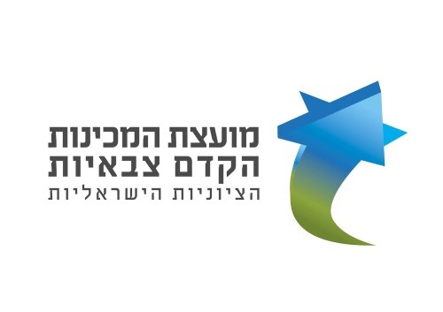

סך מועמדים
758

| מכינה | תנועה | מועמדים | חלק מהסה"כ | סטטוס |
|---|---|---|---|---|
| מכינת רעות | תנועת החלוץ | 184 | 24% | פעילה |
| מכינת נחשון | בני עקיבא | 142 | 19% | פעילה |
| מכינת נתניה | הצופים | 96 | 13% | פעילה |
| אופקים | ללא תנועה | 73 | 10% | פעילה |
| העיר העתיקה, ירושלים | בני עקיבא | 64 | 8% | פעילה |
| באר אורה | ללא תנועה | 58 | 8% | מושעית |
| הדסה נעורים | הצופים | 47 | 6% | פעילה |
| גשר הזיו | ללא תנועה | 39 | 5% | פעילה |
| דלית אל כרמל | ללא תנועה | 31 | 4% | פעילה |
| בית יתיר | בני עקיבא | 24 | 3% | פעילה |
| סה"כ | 758 | 100% |
| מכינה | תנועה | מועמדים | חלק מהסה"כ | סטטוס |
|---|---|---|---|---|
| מכינת רעות | תנועת החלוץ | 184 | 24% | פעילה |
| מכינת נחשון | בני עקיבא | 142 | 19% | פעילה |
| מכינת נתניה | הצופים | 96 | 13% | פעילה |
| אופקים | ללא תנועה | 73 | 10% | פעילה |
| העיר העתיקה, ירושלים | בני עקיבא | 64 | 8% | פעילה |
| באר אורה | ללא תנועה | 58 | 8% | מושעית |
| הדסה נעורים | הצופים | 47 | 6% | פעילה |
| גשר הזיו | ללא תנועה | 39 | 5% | פעילה |
| דלית אל כרמל | ללא תנועה | 31 | 4% | פעילה |
| בית יתיר | בני עקיבא | 24 | 3% | פעילה |
| מכינה | תנועה | מועמדים · חלק מהסה"כ | סטטוס |
|---|---|---|---|
| 1מכינת רעות | תנועת החלוץ | פעילה | |
| 2מכינת נחשון | בני עקיבא | פעילה | |
| 3מכינת נתניה | הצופים | פעילה | |
| 4אופקים | ללא תנועה | פעילה | |
| 5העיר העתיקה, ירושלים | בני עקיבא | פעילה | |
| 6באר אורה | ללא תנועה | מושעית | |
| 7הדסה נעורים | הצופים | פעילה | |
| 8גשר הזיו | ללא תנועה | פעילה | |
| 9דלית אל כרמל | ללא תנועה | פעילה | |
| 10בית יתיר | בני עקיבא | פעילה |